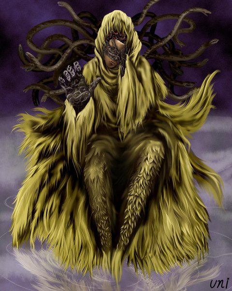

そもそもTRPGってなに？
-
テーブルトークRPG、あるいはテーブルトーク・ロールプレイングゲームは、
ゲーム機などのコンピュータを使わずに、紙や鉛筆、サイコロなどの道具
を用いて、人間同士の会話とルールブックに記載されたルールに従って
遊ぶ“対話型”のロールプレイングゲーム（RPG）を指す言葉である。
どうやってゲームを進めるの?
-
まずゲームの参加者（英語でプレイヤーと呼ばれる）それぞれが自分の操るキャラクターを用意する（通常は一人ずつ）。これをプレイヤー・キャラクター（PC）という。一般にPCは「能力値」などの数値化されたデータによって表現され、これにたとえば、戦士や魔術師といったキャラクタークラスに代表されるような役割を表すデータやシンボルや肩書きが付随する。参加者はそれを専用のシートか何らかの記録媒体（通常のプレイでは紙）にメモしておく。
-
一人は通常、自分のプレイヤー・キャラクターを作らず使わず、一般にゲームマスター（GM）と呼ばれる役を受け持つ。ゲームマスターはゲームシステムによっては、ダンジョンマスター（DM、地下牢の主人の意）、審判員、ジャッジ（審判）、キーパー（維持者）、ストーリーテラー（語り部）などと呼ばれることがある。
-
ゲームマスターは他の参加者（プレイヤー）と対話しながらゲームの舞台となる世界とそこに登場するいろいろな事件や人物を説明し、決められたルールに従って、プレイヤーが考えたキャラクターの行動が実現したか否かを裁定することでゲームを進行させる。単純化して言えば、コンピュータで遊ぶRPGでの、コンピュータ役をゲームマスターという人間が担当するのがテーブルトークRPGだといえる。
-
しばしばテーブルトークRPGは「ルールのあるごっこ遊び」と説明されるように、プレイヤー・キャラクターの行う行動を、「何でも言っただけで認める」のではなく、各種のデータとルールに従って判定してその成否を決定する点が「ごっこ遊び」や「なりきりチャット」とは異なる。判定は、主に6から100面体までの様々な形状のサイコロ（ダイス）を乱数発生装置として用いて行われるが、トランプなど他の手段を用いる場合もある。
-
プレイヤー達は、ゲームの舞台となる世界において、プレイヤー・キャラクターの役割を演じながら、行動をゲームマスターに対して宣言し、戦闘や謎解きといった課題に挑戦する。これを繰り返しつつ互いに協力または競争しながらストーリーを紡ぎ出し、最終的な目標の達成を目指すことが、ゲームの目的となっている。プレイヤーとは別個の架空人格であるキャラクターの役割を演じることが特徴であることから、「役割演技ゲーム」という意味のロールプレイングゲームという呼称がゲームの総称として使われている。
-
1回のゲームにかかる時間はゲームマスターが用意するシナリオにより異なるが、数時間単位を要することが普通である。
クトゥルフ神話TRPGの特徴
-
その名の通り「クトゥルフ神話」を題材とした、ホラーTRPGの代表格と言うべき作品である。
-
プレイヤーキャラクターであるところの「探索者」たちは、せいぜい常人より少し専門的な知識を得ている一般人に過ぎない。
-
対して、脅威となりうる「神話的存在」は正面から立ち向かって打倒できるような相手ではない。
-
むしろ、直視しただけで「宇宙的恐怖」から発狂してしまうようなおぞましくも強大な相手なのである。
-
システム的に曖昧な部分が多いためGMの裁量権が強い。さらに判定方法はシンプルであり、GMの判断をダイスに委ねるという意味合いが強い。（ＫＰによって判定の結果や技能の効果範囲が大きく異なることも意味する）
-
そのため、シナリオ進行には一般のTRPGよりもキャラの能力よりロールプレイやリアル知識に比重が置かれている。
-
また他のゲームより個々のキャラクターがわりと簡単に死んでしまう。
SAN値チェックについて
-
恐怖を表現するシステムとして、「正気度ポイント（SAN値）」「正気度ロール（SANチェック）」が挙げられる。
-
これはクトゥルフ神話TRPGの代名詞とも呼べるもので、ゲーム自体はよく知らなくても「SAN値」や「SANチェック」といった通称は知っている者も多い。
-
探索者たちは何らかの怪異に遭遇する度に正気度ロールを行い、成功・失敗に応じてそれぞれに見合った正気度ポイントを減少させる（例えば「１／１Ｄ６」の場合、成功時には１点、失敗時には６面ダイス１個の出目と同じ点数の正気度ポイントが減少する）。
-
これによって、正気度ポイントが０に近付けば近付く程、その探索者は正気を失い狂気へと向かっていくのである。
-
基本的に正気度ポイントは減る一方であるため、探索者を長く続けていく者ほど破滅に近づいてゆく様が表現されるのである。
クトゥルフってなに？
-
軟体動物がモチーフとされており、蛸のような頭部、蝙蝠のような翼、無数の触腕と巨大な鉤爪のある手足を持っている。
-
「クトゥルフ」神話と神話体系の名称に冠せられるほど代表的な神性。その名前は本来人間には発音不能な呼称を便宜的に表記したものであるため、英語でもCathulu, Kutulu, Q'thulu, Thu Thu, Thuluなど複数の綴りが存在する。
-
太古の昔、クトゥルフとその眷属の住まいである古代都市ルルイエが海底に沈み、クトゥルフは深き眠りにつくこととなった。（星辰の影響による天変地異や、地球規模の地殻変動によるものとも、旧神による封印とも言われている）
-
星辰の位置が揃い、旧支配者の復活の条件が迫るとルルイエはふたたび海上に姿を現し、同時にクトゥルーの思念波が世界中を満たし、悪夢や怪事、暴動が頻発すると伝えられている。
-
いあ！いあ！くとぅるふ ふたぐん！
他にはどんな邪神がいるの？
-
アザトース
最強と名高い邪神で、“唯一無二な存在”や“盲目にして白痴の王”と
呼ばれています。
体は不定形で、銀河の中心で眠っています。
時には「宇宙を創りだした存在」とも言われます。

-
ハスター
不定形の姿で、風の力を操るといわれています。
一方、黄色い布と仮面をつけた王の姿としても描かれます。
クトゥルフとは兄弟だったり、対立関係だったりします。